島の素材 · 3D制作ルーチン
Meshy 7 · PBR / 2K · 3件各1回 · 消費 90 / 90 クレジット。原点・寸法・テクスチャ・再インポートを検証済み。
技術検証と見た目の判定は別。ゲーム内配置・実機性能・子どもの理解は未検証です。
庭小屋
11,401 三角形 · 高さ 2.5 m · 9.46 MB · 183.3 秒
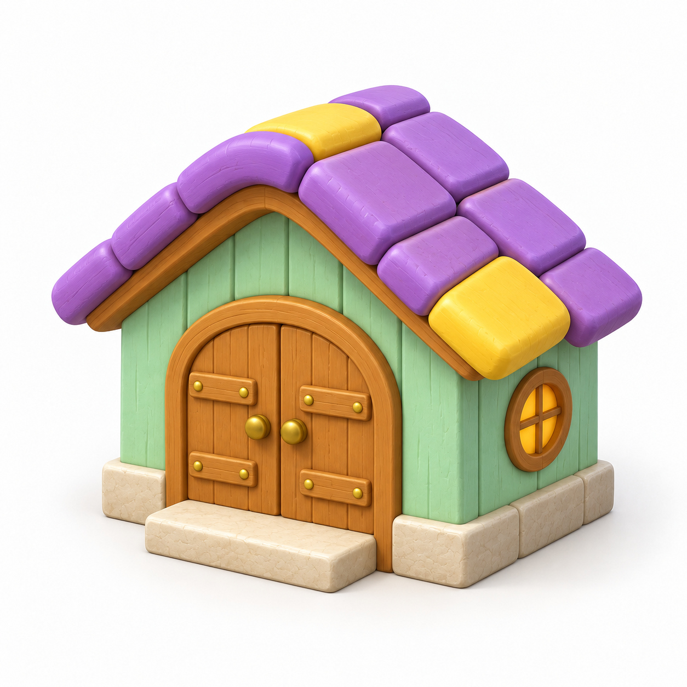
元画像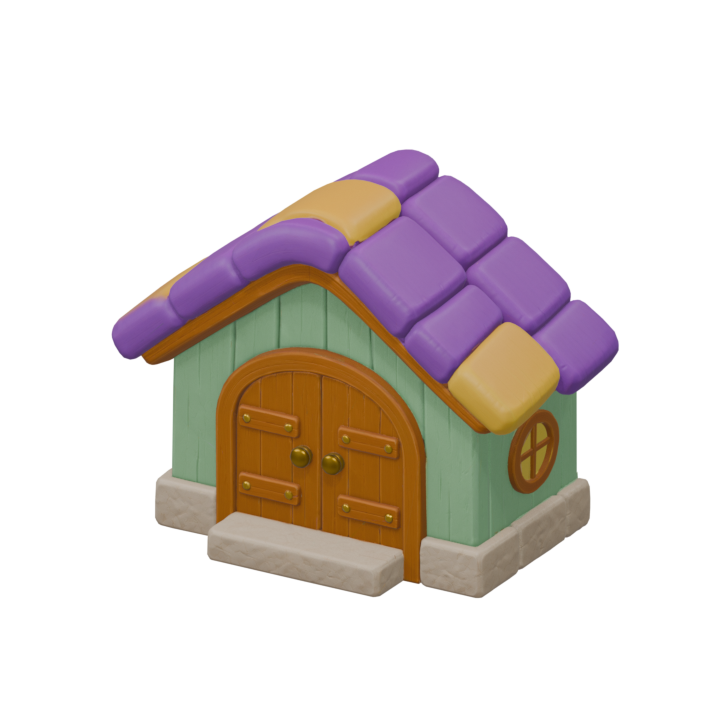
正面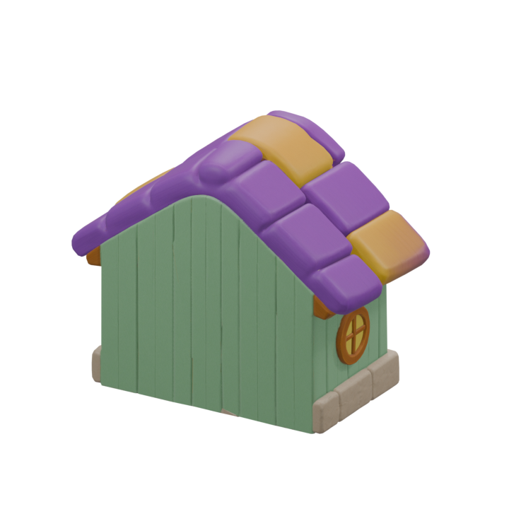
背面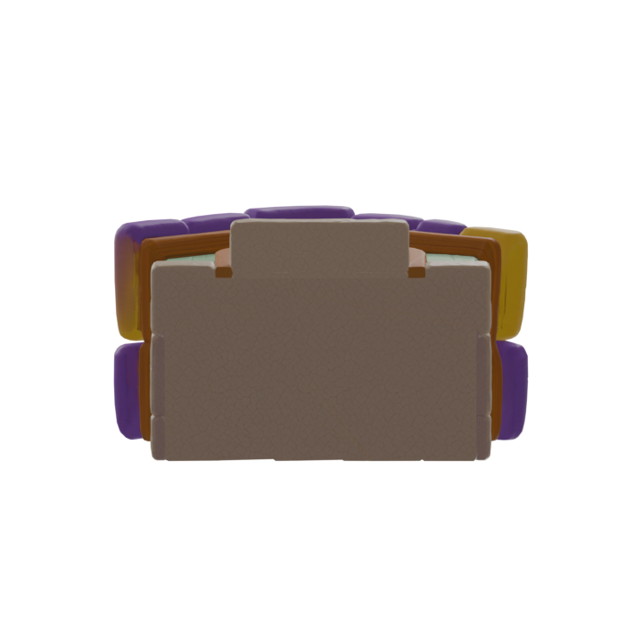
底面屋根・両開き扉・丸窓と色分けは保持。元画像より彩度と微細な質感が弱い。背面は推定され、基礎の石が背面には続かない。底面は閉じており配置に支障となる明白な欠損は見当たらない。
最終GLB 未加工GLB 検証記録
花壇
8,353 三角形 · 高さ 0.65 m · 10.06 MB · 164.7 秒
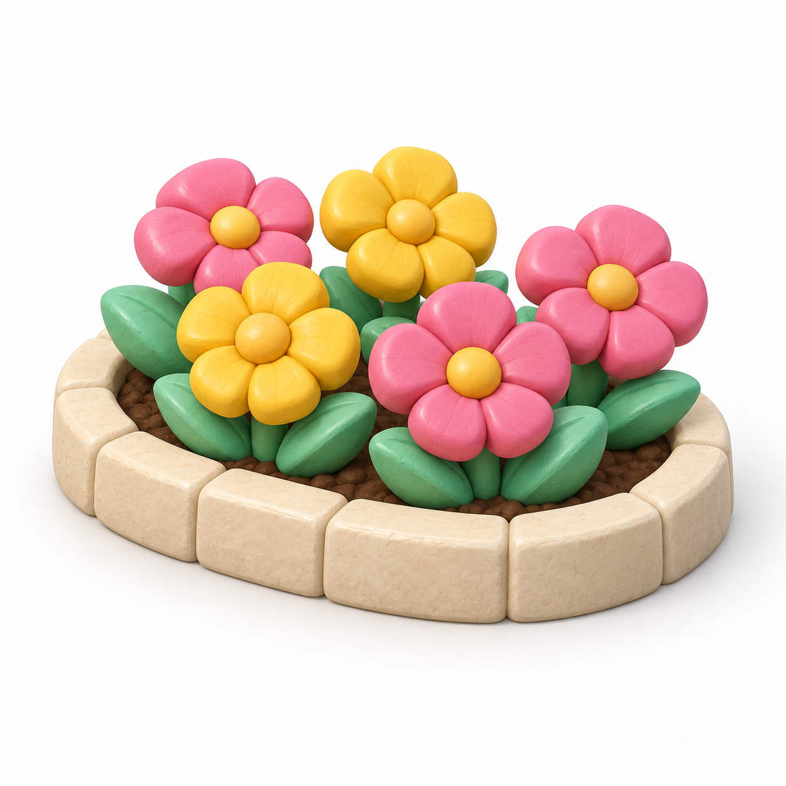
元画像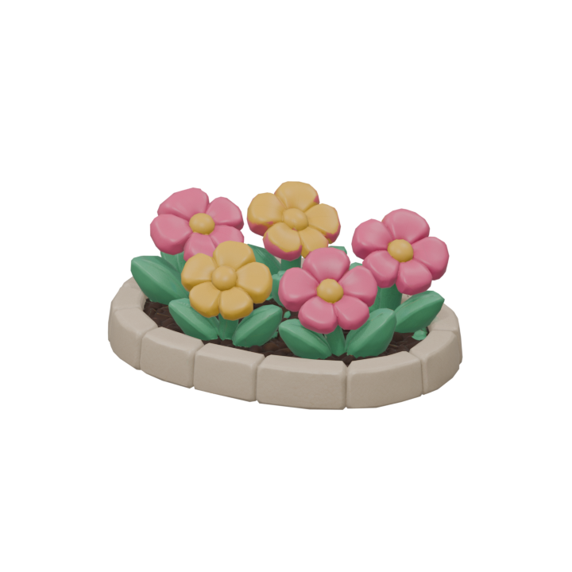
正面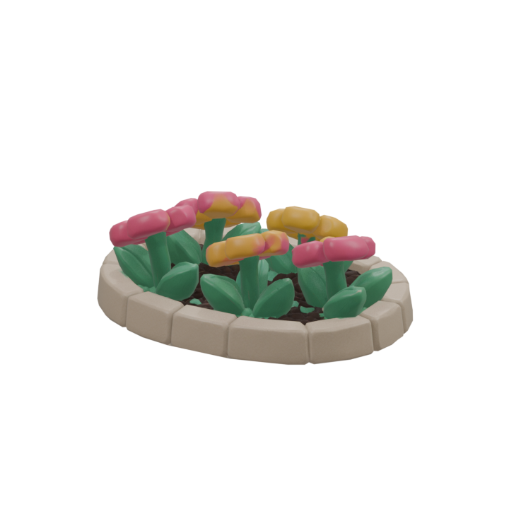
背面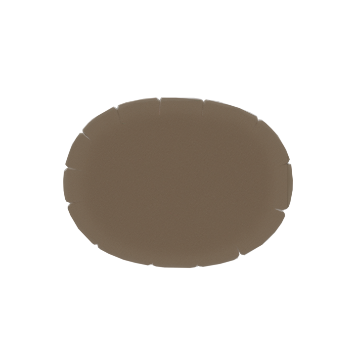
底面5輪の配色と葉・石の縁を保持。背面から花を見ると薄く、正面向きの構成。360度同じ見栄えにはならないため配置方向に注意。
最終GLB 未加工GLB 検証記録
街灯
6,099 三角形 · 高さ 2.0 m · 8.97 MB · 103.5 秒
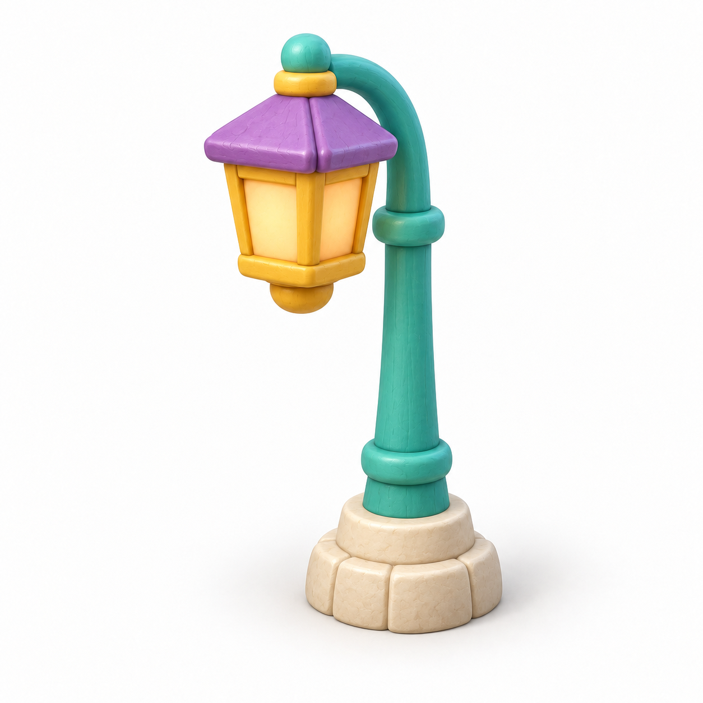
元画像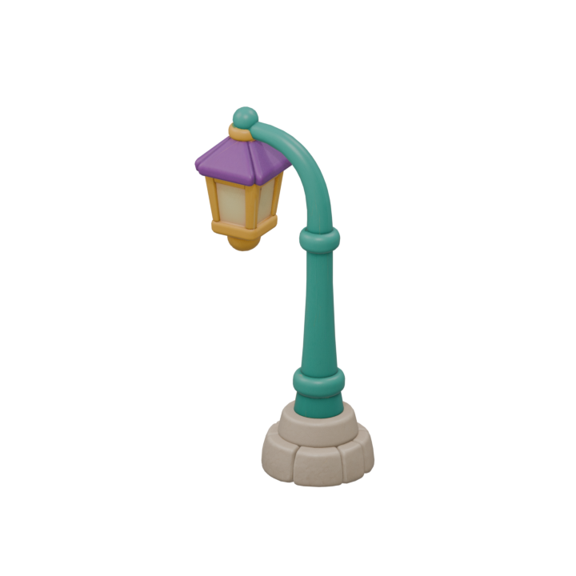
正面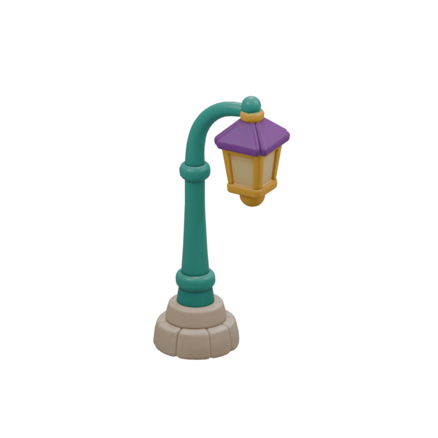
背面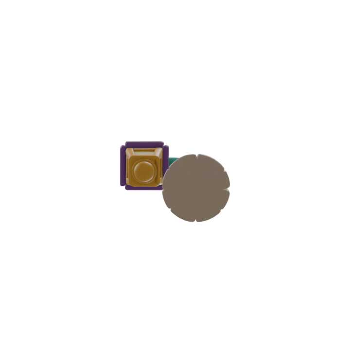
底面曲がった支柱とランタンの接続、台座を保持。元画像より細身に感じられ、黄色の明るさが控えめ。発光は設定していない。
最終GLB 未加工GLB 検証記録